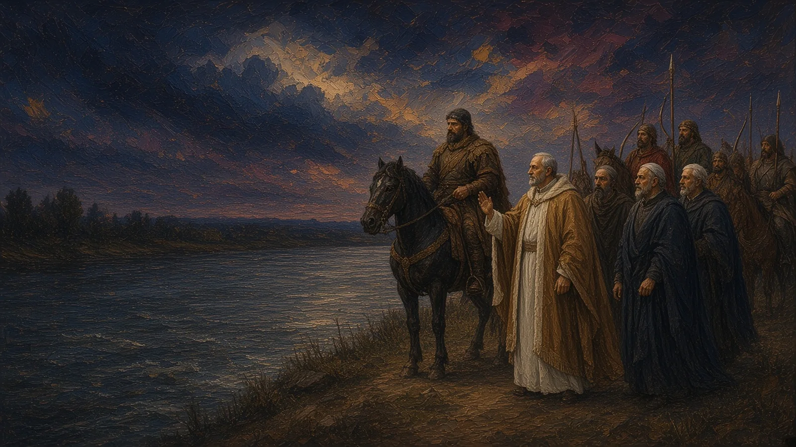
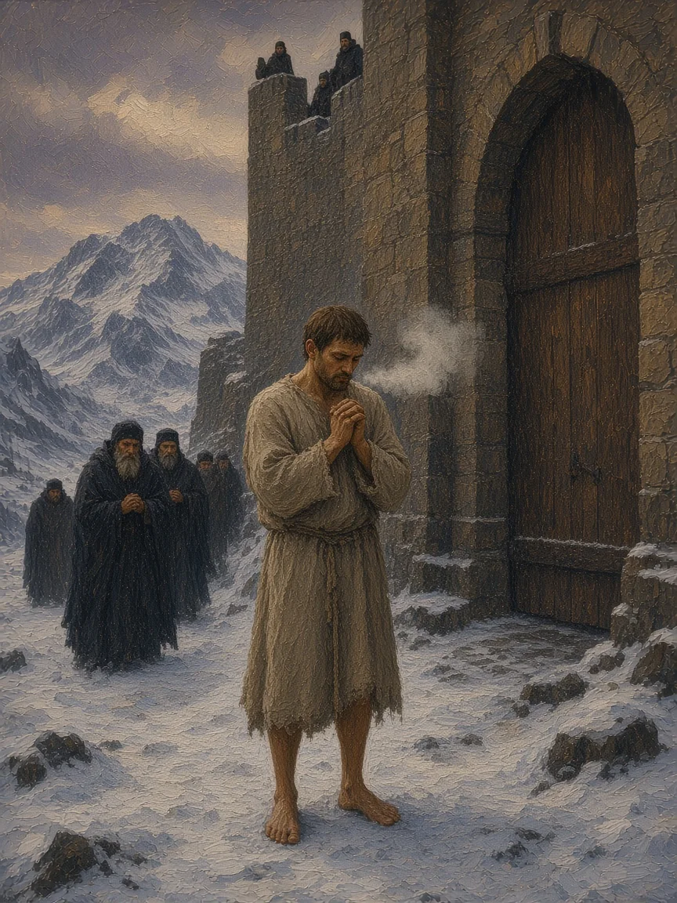

Rise of the Papacy
Before the Pope: Rome’s Early Prestige

Around 96, the church in Rome wrote to the church in Corinth, telling it to restore the elders it had pushed out. The letter speaks for “the church of God which sojourns at Rome” and names no bishop; later tradition credited it to Clement.
Prestige
Rome was the imperial capital, and Christians remembered Peter and Paul as martyred there.
Shared leadership
Rome’s house churches were probably led by a group of presbyters until the mid-second century.
A list of bishops (c. 180)
Irenaeus of Lyon listed Rome’s bishops back to the apostles to show its teaching had been handed down faithfully.
Victor and Easter (190s)
Bishop Victor tried to cut off the churches of Asia Minor over the date of Easter; other bishops, Irenaeus among them, told him to back down.
Rise of the Papacy
Rome’s Bishops Claim Peter’s Authority
In 452 Attila’s Huns were in northern Italy. Leo, bishop of Rome, rode out with two senators to meet him, and the Huns turned back. Romans remembered that their bishop, not their emperor, had faced the enemy.
- 250s: Stephen I claimed authority as Peter’s successor, the first Roman bishop known to do so; Rome later rested this claim on Matthew 16:18. Cyprian of Carthage rejected his rulings.
- Late 300s: Damasus I called Rome “the apostolic see.” Siricius issued the earliest surviving papal decretal (385) and called himself papa, “father.”
- 440–461: Leo the Great taught that Peter spoke through Rome’s bishop, and his Tome shaped the Council of Chalcedon (451). Many historians see him as the first pope in the full sense.

In the East, the bishop of Constantinople, the “New Rome,” made a rival claim.
Rise of the Papacy
Popes Govern Rome, Then Challenge Kings
In January 1077, King Henry IV of Germany stood barefoot in the snow for three days outside the castle of Canossa, asking Pope Gregory VII to lift his excommunication.
- 590–604: Gregory the Great, a former city prefect turned monk, fed Rome, bargained with Lombard invaders, and sent missionaries to England.
- 1070s: Gregory VII’s reforms attacked the buying of church offices and married clergy, and claimed that a pope could depose an emperor.
- Who appoints bishops? The Investiture Controversy ended in a compromise, the Concordat of Worms (1122).

Rise of the Papacy
Crisis and Definition: Avignon to Vatican I
1309–1377 · Avignon
The popes lived in Avignon, on the Rhone, under heavy French influence; critics called it the “Babylonian Captivity.”
1378–1417 · Great Western Schism
Two, then three, rival popes. The Council of Constance (1414–1418) ended the schism by electing Martin V.
1870 · Vatican I
Defined papal infallibility; that same year the pope lost Rome to the new Kingdom of Italy.
By 1517 the papacy had recovered its unity, and a new pope needed money to rebuild St. Peter’s.
Looking Back
How the Bishop of Rome Became the Pope
c. 96–200 · Prestige
A church in the imperial capital, linked to Peter and Paul, with no single bishop at first.
250s–461 · Claim
From Stephen I to Leo the Great, Rome’s bishops claim to speak with Peter’s authority.
590–1122 · Power
Gregory the Great governs Rome; Gregory VII challenges kings and emperors.
1309–1870 · Crisis and definition
Avignon and the Great Schism, then Vatican I defines papal primacy and infallibility.
There was no single moment when the bishop of Rome became the pope; the office grew over about 1,800 years.